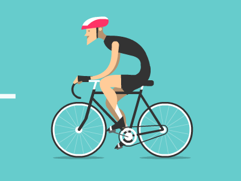

Día Mundial De La Bicicleta
Baner conmemorativo:
Unete al dia de la Bicicleta este 18 de Abril :)

Unete al dia de la Bicicleta este 18 de Abril :)


Para mas Informacion PRESIONA AQUI
* 800 millones de bicicletas ruedan cada día, con ventajas no sólo para las personas sino para el cuidado del medio ambiente. :) *
En países europeos como España, Dinamarca, Polonia, Holanda y Francia, y en algunos asiáticos como China, la bicicleta es un medio de transporte muy común entre sus habitantes.
Entonces ¿por qué este medio de transporte no es tan usado por los ciudadanos? Muchos se quejan de la inseguridad de sus ciudades como obstáculo para usarla regularmente. Otros argumentan que la geografía de sus ciudades no son las adecuadas para andar en ellas y que incluso, los conductores de autos no respetan su paso y por eso, pueden ser vulnerables de sufrir un accidente de tránsito. :(
Pero, si no lo has pensado, usar tu bicicleta como medio de transporte, así sea para recorrer trayectos cortos, puede beneficiar tu salud, al cuidado del medio ambiente y hasta tu bolsillo.
Si ya decidiste usar tu bicicleta para tus desplazamientos diarios, debes tomar algunas precauciones para que tus viajes sean seguros.
¿Utilizas tu bicicleta para tus desplazamientos regulares? ¿Cuáles beneficios crees que te ha traído esta práctica?
Marca norteamericana considerada por muchos como la mejor del mundo patrocina a algunos de los atletas más exitosos del mundo en todas las modalidades deportivas en que interviene una bici. hacen bicicletas para todo tipo de usos.
Marca norteamericana de bicicletas lleva varios años siendo la máxima rival de Specialized, pues hacen máquinas muy avanzadas tecnológicamente y además patrocinan a muchos equipos de competición
empresa taiwanesa es uno de los principales fabricantes de bicicletas del mundo, pues no sólo hace sus propias bicicletas sino que además es uno de los que más cuadros elabora para terceros. Hacen bicicletas de gran calidad tanto de carretera como de triatlón, pero es quizás en su sección de bicis de montaña donde esta marca se gana su pretigio a nivel internacional

Una de las marcas más vanguardistas en todos los segmentos competitivos: montaña, carretera y triatlón. Es suiza y no sólo se dedica a la fabricación y venta de bicicletas, sino que tienen todo tipo de complementos y vestuario para los ciclistas (zapatillas, cascos, etc.) además de dedicarase a otros deportes
Es al igual que Merida una marca taiwanesa que a pesar de hacer productos propios, es también de los principales fabricantes de cuadros del mundo para terceros. Tienen bicicletas muy buenas y fiables y destacan tanto en carretera, como en triatlón y bicis de montaña. Tienen una presencia bastante considerable entre los equipos de élite de competición
Esta marca norteamericana es de las más espectaculares del panorama internacional. Sus bicicletas de montaña con la tecnología Lefty (la horquilla sólo tiene un brazo y no dos) y sus bicicletas de carretera ultraligeras y ultra estudiadas por los ingenieros, la consagran sin duda alguna como una de las mejores marcas del mundo. Por si fuera poco hacen de los mejores cuadros de aluminio del mercado
El 19 de abril, se celebra el Día Mundial de la Bicicleta con el objetivo de promocionar este medio de transporte y llamar la atención sobre los derechos de los ciclistas.
Se celebra este día, porque el doctor Albert Hofmann, padre del LSD, ingirió a propósito 250 µg de LSD. Tras ingerir la sustancia, Hofmann sintió que le costaba hablar de forma inteligible y pidió a su asistente de laboratorio, que estaba al tanto del experimento, que le acompañase en su viaje a casa en bicicleta, pues, por las restricciones del período de guerra, no había automóviles disponibles.
Durante su ‘viaje’, las impresiones acústicas (como el ruido de un automóvil que pasaba) se transformaban en imágenes. Hofmann, al día siguiente despertó fresco y con la mente clara, aunque con cierto cansancio corporal. Desayunó con una sensación de bienestar y vida renovada, y encontró la comida deliciosa. Mientras caminaba por el jardín, notó que todos sus sentidos “vibraban con una sensibilidad superior”, que duró durante todo el día
Desde entonces, todos los años, el 19 de Abril en todo el mundo la gente coge su bici para rememorar aquel “primer viaje” en bicicleta del doctor Hofmann.
Para saber más sobre el día de la Bisicleta OPRIME AQUI